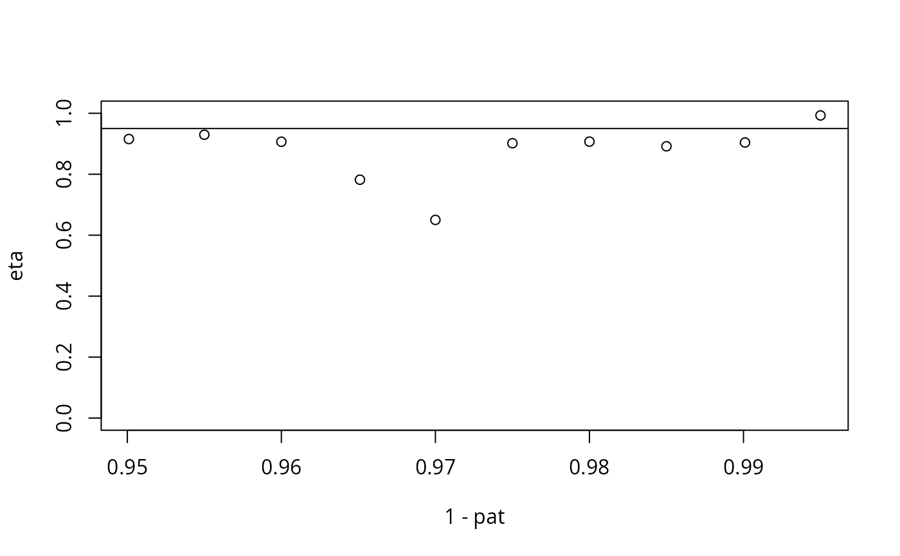

Estimators proposed by Krupskii and Joe under second order expansion for the coefficient of tail dependence \(\eta\) and the joint tail orthant probability
Arguments
- data
a matrix of observations
- q
vector of quantile levels
- ptail
tail probability smaller than
q. Default toNULL- mqu
marginal quantile levels for semiparametric estimation; data above this are modelled using a generalized Pareto distribution. If missing, empirical estimation is used throughout
- type
integer indicating the estimator type
- ties.method
method for ties
Value
a list with elements
pquantile level for estimationetaestimated coefficient of tail dependence \(\eta\)eta_sdestimated standard error of \(\eta\)k1parameter of the tail expansionpatproportion of observations above the thresholdlambdatail dependence coefficient (sic)tailprobtail probability, ifptailis provided
Note
EXPERIMENTAL. The numerical optimization of the likelihood surface is difficult, as the function is ill-behaved. Visual inspection of estimates is necessary to check for non-convergence.
Examples
d <- 2
rho <- 0.9
Sigma <- matrix(rho, d, d) + diag(1 - rho, d)
eta_true <- 1/sum(Sigma)
data <- mev::mvrnorm(
n = 1e4,
mu = rep(0, d),
Sigma = Sigma)
q <- seq(0.95, 0.995, by = 0.005)
taildep <- kjtail(data = data, q = q)
with(taildep,
plot(x = 1-pat,
y = eta,
ylim = c(0,1),
panel.first = {abline(h = (1+rho)/2)}))
